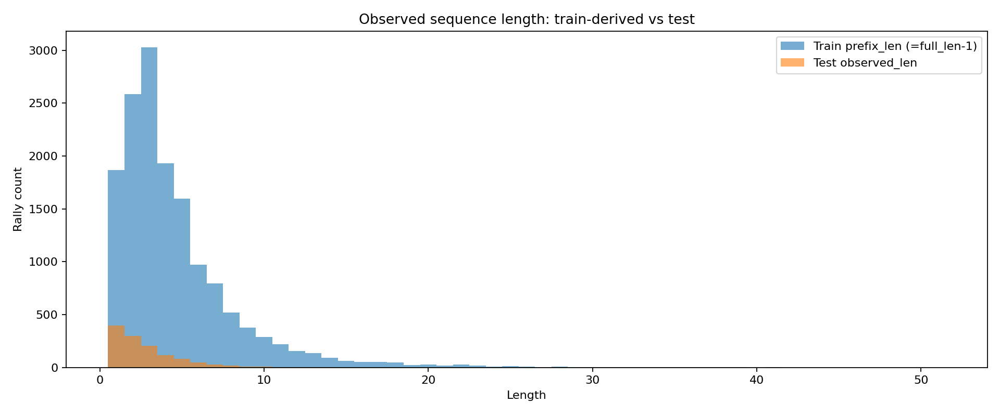
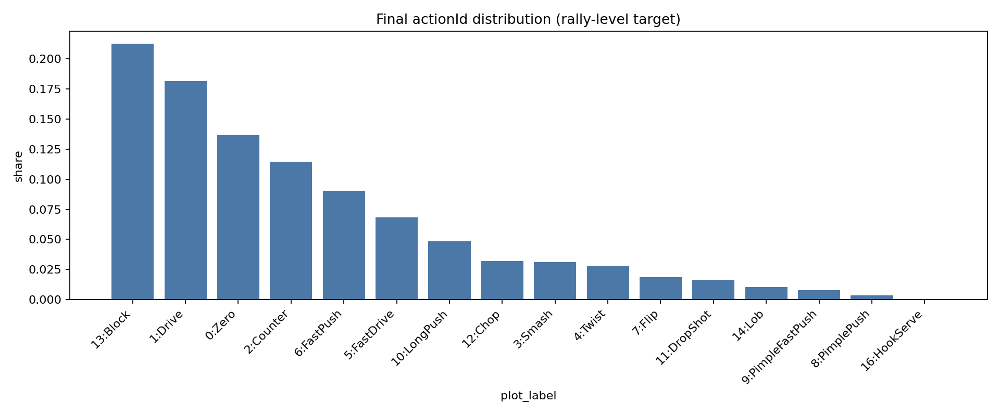
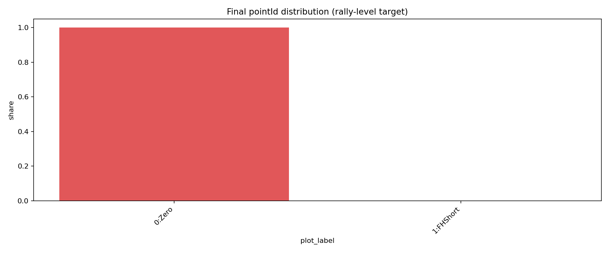
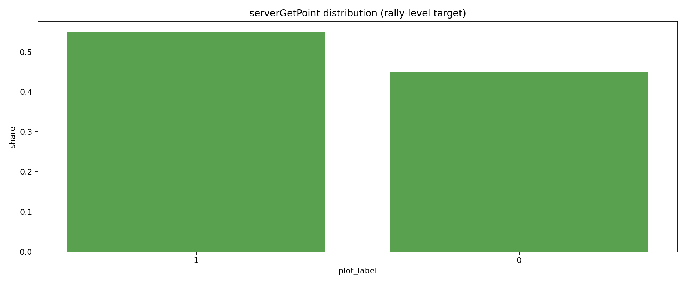
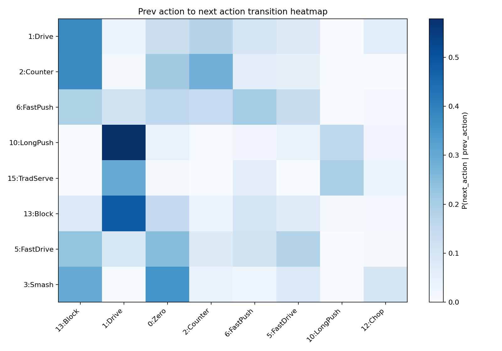
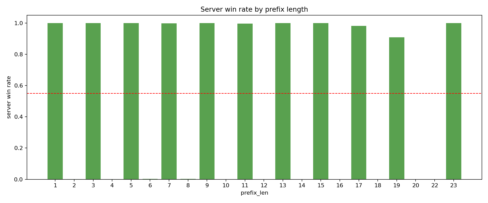
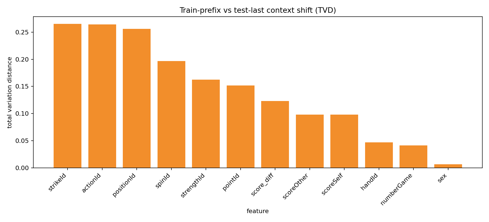
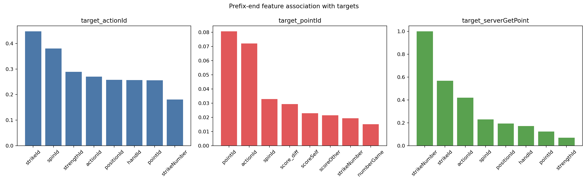

rally_uid 以已觀測前綴序列預測下一拍 actionId、pointId 與 serverGetPoint。
readme.md 的正式目標是 actionId、pointId、serverGetPoint。data_caption.md 對 strikeId 與 test label 的描述和提交格式不完全一致，建議以提交檔格式為準。pointId 幾乎全部會變成 0；這暗示 test 很可能是在較早時間點截斷 prefix。rally_uid 或 match 分組，避免同一 rally 洩漏。






